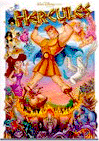
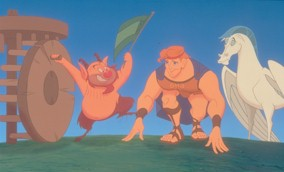
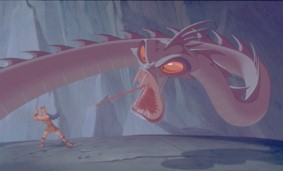
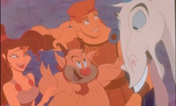
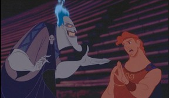

|
|
|
| Movie Credits | Buy It! |
Hercules
Review by Carrie
Gorringe
Posted 27 June 1997
|  | Directed by John Musker and Ron Clements Starring the voices of Tate Donovan
(Adult Hercules), Animation Screenplay by Ron Clements,
John Musker, |
Before a discussion of the new Disney animated film, Hercules, disintegrates into one of those fights over how accurately the directors and screenwriters have accurately depicted the mythological events described herein, and how Western culture is taking yet another turn on Spengler’s helix of doom with all the speed of a Formula One racer (shades of last year’s debate over Disney’s interpretation of the Hugo classic, Notre Dame de Paris), let’s make one thing perfectly clear as soon as possible: with all respect to the purity of classical literature and myth aside, the idea of discussing literary accuracy in a Disney animated film is irrelevant. These films are, at their very best, gentle parodies of both their source material and their contemporary society. Moreover, there are only four qualitative categories by which to judge these films: the animation, the strength of the hero’s sidekicks as they act as a counterbalance to his overwhelmingly decent behavior (it’s not as bad here as it could have been), the evil of the villain and his sidekicks, and the amount of whining you can endure from your children (should you have any) before you admit defeat and pack them into the car for a matinee screening. If, however, you can muster up a great suspension of disbelief and merely want to be entertained, Hercules will do the job effectively and without apology.
This, according to the screenwriters, is the story of Hercules: our hero is the offspring of Hera and Zeus, who is kidnapped by two minions named Pain and Panic under the direction of their master, Hades, Lord of the Underworld. Hades, it seems, has plans for an other-worldly coup d’etat, plans that would be thwarted eighteen years hence, should the baby Hercules grow to manhood. Ordered to make the child mortal and then kill him, Pain and Panic botch the job quite badly. The baby is found and raised by Amphitryon and Alcmene, a childless couple overjoyed by their find, and not willing to ask too many questions concerning the baby’s background. However, by the time he reaches adolescence, Hercules’s strength is causing conflict with the villagers (something to do with wrecking the marketplace single-handedly). On a trip to Zeus’s temple to pray for salvation, the young man is informed about his former status in life, and the youth decides to seek out one Philoctetes, "Phil" for short, a satyr with a gift for training sports champions. Reluctantly he takes on this "one last hero", and, after training, takes Hercules and Pegasus, Herc’s trusty winged steed, to Thebes ("The Big Olive," Phil calls it), where Hercules undergoes many challenges in an attempt to become a hero and regain his godly status. On the way to glory, however, Herc must overcome two challenges: the threat from Hades, who isn’t the least bit happy over Herc’s survival, and the threat to his heart from Megara, nicknamed "Meg", a feisty maiden who doesn’t see Herc as God’s gift to women. All of this activity, except for the introductory narration delivered by Moses himself, is commented upon by the five muses, who act and sing with the same saucy verve of the Five Supremes, if there had ever been such a group. Our five lovely muses give us a swinging update on each twist and turn in Herc’s adventures, assuring us that everything they sing is "the gospel truth". Naturally, it isn’t but, perhaps it’s just as well, with the National Baptists demanding a boycott of Disney products and films, that the screenwriters neglected to mention that the "real" Hercules was the by-product of one of Zeus’ extra-marital trysts.
There is one indisputable truth at work here: the animation in Hercules is of the highest quality in ten years. The key to the visual awe that the film inspires has a lot to do with one word: integration. With this film, the animation unit has succeeded in welding together two disparate types of animation – the three-dimensional and the so-called "flat" animation into a seamless whole. In earlier Disney films, such as Beauty and the Beast and The Lion King, the differences between the two types were glaringly obvious as shots containing one style were juxtaposed with shots of the other; under these circumstances, spatial dimensions often seemed askew to the point of disorientation. No detracting elements exist this time. The success is apparent in Hercules’s fight sequences, especially in Herc’s fight with the many-headed Hydra; it had a mentally scarifying effect that I haven’t felt since watching the "Night on Bald Mountain" sequence from Fantasia (animated by the legendary Vladimir Tytla) on a large screen. This sequence adds new meaning to the term, "close-up; as the camera tracks into an empty space and a malevolent, fang-bearing mouth suddenly soars straight for the camera from the hero’s point of view, you had better have a firm grip on your bag of popcorn -- likewise for the final showdown between Herc and the Titans. The achievement, coming as it does nearly ten years after the first experiments in combining the two processes in Oliver and Company, is even more beautiful for all the waiting (though perhaps a little too scary for children under the age of five).
Then we have Phil and Meg, Herc’s mentor and love interest, respectively. Short of stature but not of chutzpah, Phil is all boisterousness and punning ripostes, as one might expect from a character whose voice and personality are borrowed straight from Danny DeVito – the combination is irresistible. Meg seems to be yet another one of those Disney heroines who conforms to a new stereotype: that of the feisty female. She is saved from potential mediocrity by the insolent manner in which she delivers her lines (usually accompanied by a strong shift from her hips) and her obvious mocking sensuality – call her classical Greece’s answer to Mae West. These two, entrusted with keeping our hero on the straight and narrow path to deification, have a real fight on their hands (well, Phil has a real fight on his hoofs, but metaphors are only barely efficient where a blurring of categories is concerned).
But, of course, a Disney animated feature film is nothing without a villain of unrelentingly nasty wit and shrewdness, and Hades is, if you’ll pardon the expression, the answer to everyone’s prayers. Resembling nothing so much as a cross between Gorgeous George and Christopher Walken on a bad hair day, His Royal Viciousness conceals his burning desire (you knew I had to say it) for power underneath all the smarmy spiel of your Uncle Lester, the used-car salesman -- or perhaps Lester’s upscale counterpart, the Hollywood agent. All this god needs is a loud plaid suit and a polka-dot tie (or, correspondingly, Armani to the max) and he could be fleecing anyone, anywhere, anytime, with his phony, 10000-watt, "trust-me" smile at the ready, as he runs the underworld like a demented C.E.O. "Memo to me," he purrs with cruel glee to his extremely-flawed flunkies, Pain and Panic, after they fail him yet again, "Maim you [two] – after my meeting." Woods delivers Hades’s verbal goods with wicked relish. I was going to remark on the incredible nature of Wood’s performance here; the problem with such an adjective is the absolute credibility of what Woods puts across, since he truly gives the character a legitimate other-worldly persona – the flip side of Zeus’ bombastic merriment, as delivered flawlessly by Rip Torn. The difference between Hades and the miserable antics of last year’s villain are considerable: Dom Frollo of The Hunchback of Notre Dame failed to be effective – he was too melodramatic to remain outside the fate that he imposed upon others from the very beginning. Hades, on the other hand, is up to his neck solely in machinations; he gives the impression that he just might elude the consequences of his actions, and that kind of untrammeled power makes him fascinating to watch. Woods is ably assisted in his malevolently merry game by the manic antics of Frewer (best known for the television show, Max Headroom) and Golthwait (best known as a comedian whose high-volume, frenetic behavior makes him a poster child for Prozac). But even as Hades sneers at his rival, Zeus, for giving Achilles that bum heel of his, his own two little Achilles heels wait abjectly for their master’s call, ready to demonstrate at a moment’s notice – and to Hades’ detriment -- exactly how many good intentions are needed in paving the road to hell.
In the case of Hercules, however, good intentions make for great entertainment. There’s enough madness of every type for everyone, so, fulfilling all of the promises for animation quality, sidekicks and villains, Hercules is great fun -- and that’s the gospel truth (the fourth element is a little more difficult to predict; the length of time that you can hold out against your children’s entreaties is your own business).
Contents | Features | Reviews | News | Archives | Store
Copyright © 1999 by Nitrate Productions, Inc. All Rights Reserved.